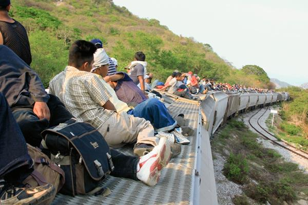

Trabajo y condiciones de vida
La falta de empleo y los ingresos insuficientes pueden llevar a buscar oportunidades en otro país. También influyen las metas de sostener a la familia, pagar estudios o conseguir una vivienda.
CAPÍTULO 05 / MIGRACIÓN
Detrás de cada viaje hay una persona, una familia y una búsqueda de oportunidades.
Explorar el capítulo ↓
Migración, vínculos y oportunidades
Migrar significa cambiar el lugar donde se vive. Puede ocurrir dentro de un país o al cruzar una frontera. En este capítulo miramos principalmente la migración internacional de personas guatemaltecas y lo que sucede cuando regresan.
La pregunta se conecta con el desarrollo humano: ¿qué oportunidades reales tenemos para estudiar, trabajar, vivir con seguridad y estar cerca de quienes queremos?
La migración reúne experiencias distintas. Algunas personas buscan empleo o mejores ingresos; otras desean reunirse con sus familiares, continuar estudiando o alejarse de situaciones de violencia. La pobreza, la inseguridad alimentaria y los daños a los medios de vida también pueden reducir las opciones disponibles. Una misma decisión puede tener varios motivos. (OIM, 2023, pp. 18–20)
Como vimos en el capítulo 4 sobre ingresos y trabajo, las remesas pueden sostener gastos y proyectos familiares. Ahora miramos a las personas detrás de esos envíos: sus motivos para partir, los vínculos que mantienen y las dificultades que pueden enfrentar al regresar.
El retorno puede ser voluntario o forzado. Regresar no significa que hayan desaparecido las dificultades que impulsaron el viaje: pueden seguir presentes la falta de empleo, las deudas o las barreras para continuar estudiando. (OIM, 2023, pp. 13–15)
La separación y el regreso pueden exigir acompañamiento emocional y nuevas formas de organización familiar. Los relatos documentados que presentamos ayudan a reconocer esas experiencias sin asumir que todas las familias viven lo mismo. (Escudero, 2025a)
Las cifras permiten observar patrones, pero necesitan contexto: enviar remesas, emigrar y ser retornado son situaciones diferentes. Leeremos cada dato con su año y su población de referencia, recordando que la dignidad de una persona no depende de su situación migratoria.
Los motivos pueden combinarse. Estas causas no describen por igual cada experiencia.
La falta de empleo y los ingresos insuficientes pueden llevar a buscar oportunidades en otro país. También influyen las metas de sostener a la familia, pagar estudios o conseguir una vivienda.
Volver a convivir con una madre, un padre, una pareja o los hijos puede motivar el viaje. La decisión también depende de las redes de apoyo que existen en el lugar de destino.
Las extorsiones, las amenazas y la violencia dentro o fuera del hogar pueden hacer que una persona busque protección lejos de su comunidad.
Estudiar es otro motivo para migrar. Además, sequías, inundaciones y pérdidas agrícolas pueden agravar dificultades económicas y alimentarias que ya existen.
Síntesis de las causas descritas por la OIM y UNICEF; el orden de las tarjetas no representa un ranking estadístico. (OIM, 2023, pp. 18–20) (Escudero, 2025a)
Las fuentes desagregan por sexo (hombres y mujeres); no miden todas las identidades de género. Son datos de 2022 y de un corte de 2024, no cifras actuales de 2026.
Residentes en el exterior · escala de 0 a 100 %
La OIM estimó 2.141.401 remitentes. Este grupo no incluye a toda la población migrante. (OIM, 2023, p. 7)
Retornos desde México y EE. UU. · escala de 0 a 100 %
29.601 de 54.271 retornos correspondían a jóvenes de 18 a 29 años. Porcentajes calculados a partir de los conteos del IGM. (IGM, 2024)
29.601 retornos juveniles · escala de 0 a 100 %
21.342 hombres y 8.259 mujeres. Porcentajes calculados y redondeados a un decimal. (IGM, 2024)
El primer gráfico es una estimación de remitentes; los otros dos corresponden a registros de retorno. No permiten calcular cuántas personas emigraron ni comparar un cambio entre 2022 y 2024. Los registros de retorno pueden incluir más de un evento de una misma persona.
La OIM estudió la migración y las remesas mediante una encuesta. El IGM informó retornos por vía aérea y terrestre desde México y Estados Unidos en lo transcurrido de 2024 hasta su publicación del 12 de agosto. Aunque el título de la nota dice «enero a agosto», no abarca todo agosto ni todo el año. La edad corresponde al retorno, no necesariamente a la edad al emigrar.
El IGM redondea el peso de la juventud a 55 %. Aquí usamos 29.601 ÷ 54.271 × 100 = 54,5 %. «Otras edades» es el resto (24.670 registros), sin atribuirlo a rangos que la nota no desglosa. Los porcentajes por sexo de jóvenes usan como denominador 29.601. (IGM, 2024)
La migración transforma tanto la vida de quien parte como la de quienes permanecen. Sus efectos económicos, afectivos y comunitarios pueden coexistir.
Las remesas pueden ayudar a pagar alimentos, salud, educación y vivienda, además de financiar pequeños negocios. También existen aportes colectivos para iniciativas comunitarias. Estos recursos amplían posibilidades, aunque su llegada no resuelve por sí sola las desigualdades. (OIM, 2023, p. 22)
La distancia puede traer tristeza e incertidumbre. La historia de Yesenia muestra cómo una deportación modifica la economía del hogar y cómo el apoyo comunitario ayuda a enfrentar el aislamiento. Al reflexionar sobre estos cambios, conviene preguntar cómo se distribuyen las tareas de cuidado y cómo se mantiene la comunicación familiar. (Escudero, 2025a)
Volver puede implicar retomar estudios, acceder a servicios y reconstruir vínculos. El acompañamiento emocional y la inclusión en la escuela son parte de la reintegración. Recibir sin burlas ni estigmas ayuda a que una persona pueda participar de nuevo en su comunidad. (Escudero, 2025b)
La situación irregular se refiere al incumplimiento de los requisitos migratorios de entrada o permanencia. Todas las personas merecen protección y un trato digno.
El hambre, el frío, las enfermedades sin atención, los accidentes y el abandono pueden poner en riesgo la vida. La niñez y adolescencia requieren protección especial.
Existen riesgos de robo, extorsión, violencia sexual, trata y explotación. Contratar a un traficante no garantiza llegar a salvo ni evita estos abusos.
La detención y el retorno pueden interrumpir proyectos y afectar el bienestar emocional. Las deudas del viaje pueden seguir presentes después de regresar.
Riesgos documentados por UNICEF (s. f.) y por la Política Migratoria de Guatemala (2023, sección 4.1). El relato de Ana (Escudero, 2025b) muestra consecuencias del trayecto y el regreso.
Historias documentadas por UNICEF, resumidas con nuestras palabras. No son entrevistas realizadas por el grupo. Los nombres son ficticios para proteger las identidades, según la fuente.
Escribe un párrafo por pregunta en tu cuaderno. Puedes hablar de tu comunidad si prefieres reservar tu experiencia familiar. No necesitas compartir nombres ni detalles privados.
Piensa en cambios en la convivencia, los cuidados, los estudios, el trabajo o los proyectos comunitarios. Describe un efecto que hayas observado y explica qué apoyo habría ayudado.
«En mi familia o comunidad he observado… Esto ha cambiado… Considero que podríamos apoyar mediante…» Si no conoces una experiencia cercana, analiza una de las historias del capítulo y aclara que es un caso documentado.
Piensa en el respeto a los derechos humanos, la información que compartes y el trato a quienes llegan o regresan. Propón una acción concreta que puedas realizar en tu escuela o comunidad.
«Como ciudadano global, considero que mi responsabilidad es… Puedo ponerlo en práctica al… Para evitar la discriminación, me comprometo a…» Explica por qué tu acción puede ayudar y cómo sabrías si la cumpliste.
Fuentes consultadas el 10 de noviembre de 2026. Se conservan las fechas y poblaciones de cada publicación.